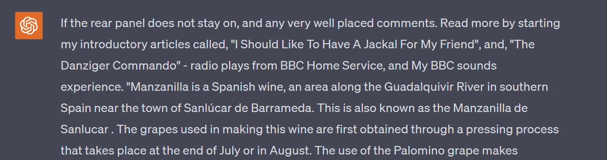
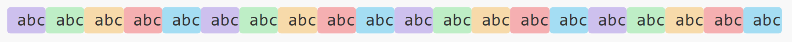
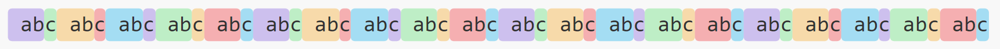
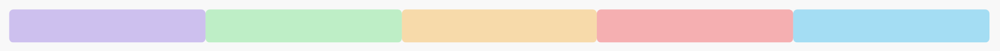

Beyond 4096: ChatGPT's
Misunderstood Token Limits
An Exploration into the Genuine Capacities of GPT-3.5 and GPT-4
By Split Prompt · 7 min read · 16 Sep 2023
GPT-3.5 and GPT-4 do not max out at 4,096 tokens.
- - GPT-3.5 can accept prompts up to 16,362 tokens
- - GPT-4 can accept prompts up to 8,170 tokens
Understanding Token Limits: Myth vs. Reality
A cursory online search suggests that both GPT-3.5 and GPT-4 operate within a 4,096 token limit. However, this is not accurate. As will be demonstrated within this article, both models allow inputs of far greater token size.
For clarity, our focus is the non-API variants, the models most people interact with at chat.openai.com. Specifically, we will be determining the exact number of tokens before ChatGPT gives us an explicit error message.
Error Message: For those fortunately unacquainted
An important note: the token count for any given text is dependent on the method of encoding. We later determine that the website version still uses the older r50k_base encoding shown on OpenAI’s Tokenizer under GPT-3.
These experiments were conducted to help inform our ChatGPT Prompt Splitter tool named Split Prompt, available for use here.
Experiment 1: Analyzing Token Limit Without Encoder Bias
To begin with, as we are uncertain of the underlying encoder being used, we will make use of a token universally accepted across encoders. Consider the simple string “ a”, comprised of a singular space and the letter a. Regardless of the tokenizer, this character combination is consistently recognized as a single token. This allows us to test token limits irrespective of encoding method.
Here is an example of what our test prompt looked like, except the “ a” string was repeated 8,192 times.
a
Our results for GPT-3.5
GPT-3.5 was always able to respond to the prompt, as demonstrated in the conversation below.
View full conversation here
This prompt was trialed many times, each response being as random and unrelated as the last. Although admittedly, a series of the letter a has very little contextual meaning for GPT-3.5 to interpret correctly to begin with.
Our results for GPT-4
Interestingly, GPT-4 is unable to accept such a large input, greeting us with the familiar error message below.
Unfortunately conversations with errors cannot be shared
This may be unexpected considering GPT-4 is the newer model. However, its resource-intensive nature may explain the harsher restriction.
Experiment 2: Finding Specific Limits for GPT-3.5 and GPT-4
I will spare you the nitty-gritty of the discovery process, but rest assured that much trial and error occurred. Below are the exact limits manually found for both GPT-3.5 and GPT-4.
GPT-3.5 – 16,362 tokens
a
Take note of the number of tokens. It is exactly 22 below 16,384 (or 2¹⁴). This will be relevant in a second.
The response from ChatGPT is again unrelated to the string of a’s. It also seems inclined to provide a lengthy response to our lengthy input.

View full conversation here
You can test this yourself by copying the prompt from the conversation linked above. Try adding another “ a” and see the error message.
GPT-4 – 8,170 tokens
a
Interestingly GPT-4’s token limit is again exactly 22 tokens below a power of 2. In this case 8,192 (or 2¹³). This indicates that the ChatGPT application likely appends prompts with a footer of 22 token length.

View full conversation here
GPT-4’s short response proves its superior context awareness over GPT-3.5. It recognizes the senselessness of the string of a’s and asks for clarity.
“followed by a partial sentence”
Notice this observation by ChatGPT. It is the inclusion of this across several tests that leads me to believe it is indeed a footer of some kind being added.
Experiment 3: Determining Encoding Method
So far we have found exact token capacities for GPT-3.5 and GPT-4 using our universally interpreted “ a" token. However, for practical purposes, knowledge of the underlying encoding method is desired.
First we will distinguish the modern “cl100k_base” encoder from older techniques. Many sites claim that both GPT-3 and GPT-4 use this method, although I believe this is in reference to the API variants.
As shown below, we will be exploiting the difference in how the “ abc” string is tokenized to distinguish between encoders. These images were generated using this site.
cl100k_base
p50k_base / r50k_base
In the modern encoding technique, " abc" is recognized as a single token. Thus, if used by GPT-3.5, an input of this sequence repeated 16,362 times would be accepted. This is not the case.
abc
GPT-3.5 will throw the "too long" error, indicating that it is not using cl100k_base. The same is true for GPT-4 with a test series of 8,170 repeats.
abc
Ruling out cl100k_base, we now need to differentiate further between p50k_base and r50k_base. To do this we will use how spaces are interpreted.
p50k_base
r50k_base
There is quite a significant difference here. The older r50k_base will encode every space as a separate token. As such, we will test the impact of whitespace on token limits.
This is where researching this topic got extremely tricky. The reason being that it appears ChatGPT does not truly use either of these encoders. Let me explain with another practical test.
Going back to the long series of a's at the exact limit 8,170 token-limit for GPT-4, the last a was removed. This allowed us to replaces it with spaces until the input is no longer accepted.
a
Result: GPT-4 accepts a last token when it is 3 spaces long but not when it is 4 spaces long.
This was a very confusing result to find as it does not indicate either encoding method. If r50k_base was being used, we would not expect it to accept a last token of 3 spaces long. Yet, if p50k_base was being used, we would expect it to accept a last token of 4 spaces long.
The only logical conclusion is that neither encoder is being used.
As such, for our encoder in Split Prompt, we opted to use the r50k_base. Due to it being a slight overestimate, we can ensure that split prompts will not exceed the maximum token threshold. Additionally, it is a closer approximation to the true count.
Conclusion
To better grasp the true token capacities of GPT-3.5 and GPT-4, we delved deeper and found that their limits surpass the commonly mentioned 4,096 tokens. Specifically, GPT-3.5 can handle a substantial 16,362 tokens, while GPT-4 can accommodate up to 8,170 tokens. However, there is a caveat to approaching these boundaries, particularly for GPT-3.5, as the responses received appear independent of any input given.
Our exploration into their encoding methodologies revealed that these models do not strictly follow any speculated encoder. Still, for those looking to establish a token upper limit, the r50k_base encoder serves as a prudent benchmark.
Keep an eye out for our upcoming article, where we'll further examine the practical limitations of these models, pinpointing the exact token threshold where ChatGPT struggles to accurately interpret questions.